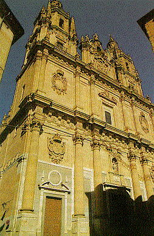
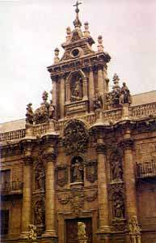
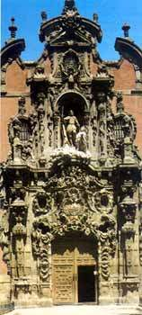
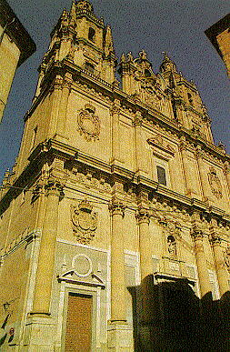
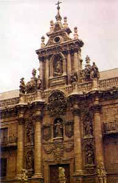
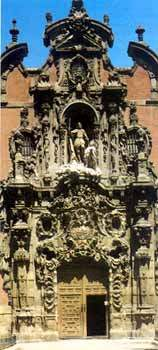

Arquitectura barroca española
 Clerecía barroca |
Cúpula barroca |
 Fachada de la Universidad de Vallodolid |
 Fachada del Hospicio de Madrid |


 Clerecía barroca |
Cúpula barroca |
 Fachada de la Universidad de Vallodolid |
 Fachada del Hospicio de Madrid |